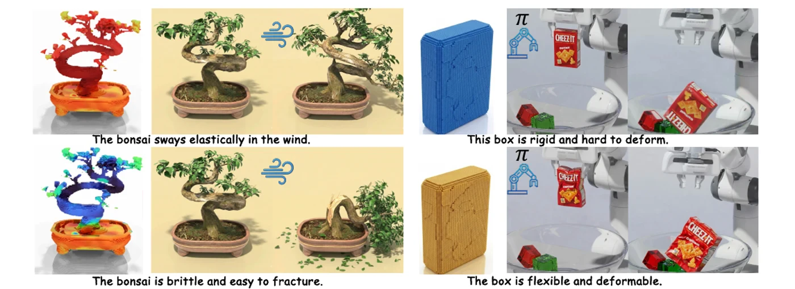
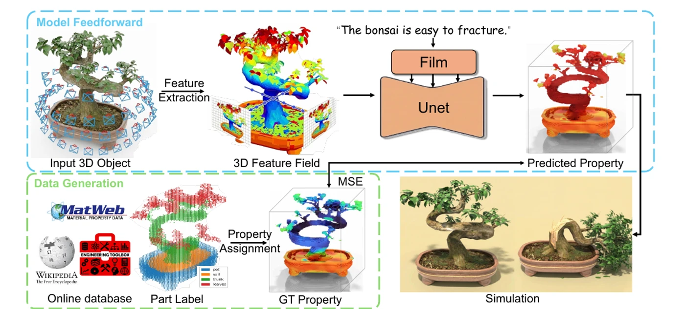
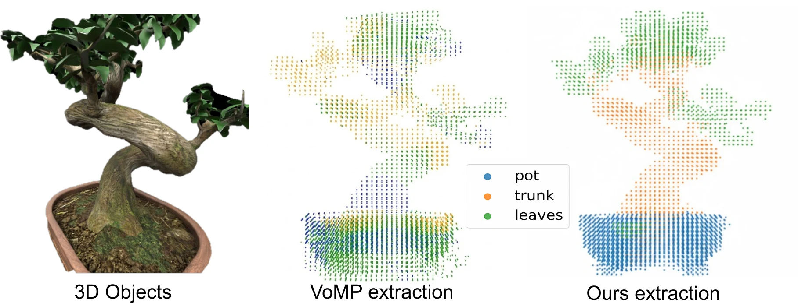
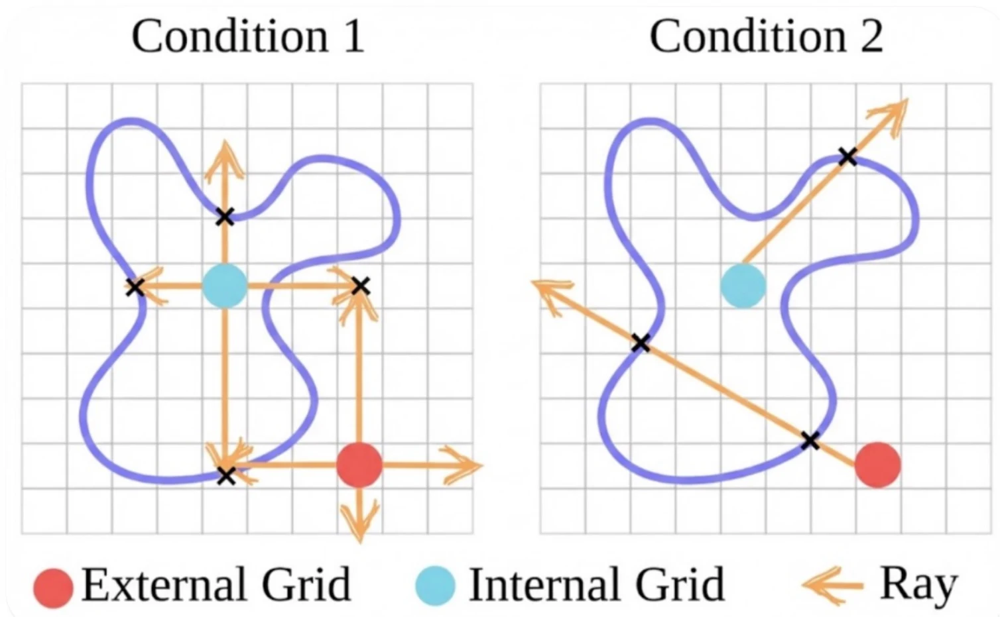
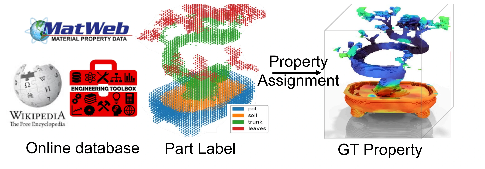

Condition A
Stiff stems
The potted plant stays upright and shows only minor shifts in the wind.
Anonymous ECCV 2026 Submission #7088
Automatic Text-Condition Physics Property Generation
Turn a 3D asset and a physical description into a dense, simulation-ready material field in one forward pass.
Why text matters
A rubber object and a rigid plastic replica can look nearly identical. AutoPhyX resolves this ambiguity by conditioning dense 3D physical property prediction on language, coupling semantic intent with spatial visual features.
The resulting voxel field predicts Young's modulus, Poisson's ratio, and density. It transfers across meshes, point clouds, Gaussian Splatting, and NeRF, and can drive both MPM and FEM simulations.

Text-controlled dynamics
Select a scene to compare simulations under the same setup with different text-conditioned properties.
The potted plant stays upright and shows only minor shifts in the wind.
The plant undergoes pronounced flexible bending and sways deeply to the side.
Method

Render multi-view OpenCLIP features into a spatially coherent 3D voxel field.
Apply text-conditioned FiLM transformations across multiple 3D U-Net scales.
Regress dense fields for Young's modulus, Poisson's ratio, and density.
Transfer the voxel properties to GS, mesh, or point representations for MPM and FEM.
Volumetric grounding
AutoPhyX keeps semantic structure intact while lifting multi-view features into a physics-ready volume. A second pass fills the interior that cameras cannot observe.

Volume rendering separates pot, trunk, and leaves instead of blending features from occluded views.

Coarse enclosure checks and ray-surface intersections recover a solid volume through complex concavities.
Text2Physics
Each asset is decomposed into semantic 3D parts before any physical property is assigned. Language then specifies which parts change and how, turning one object into multiple grounded supervision examples.
Browse the available Text2Physics dataset
Part names are grounded in 3D OpenCLIP voxels and selected from multiple segmentation candidates.
Selected parts receive diverse, physically plausible language conditions.
Authoritative sources define valid ranges for Young's modulus, Poisson's ratio, and density.
Quantitative results
AutoPhyX with OpenCLIP achieves the strongest reported performance across rendering and physical-property metrics on Text2Physics.
| Method | PSNR up | SSIM up | LPIPS down | Avg. physics error down |
|---|---|---|---|---|
| NeRF2Physics | 18.554 | 0.889 | 0.245 | 0.841 |
| Gemini (avg.) | 21.124 | 0.869 | 0.205 | 0.218 |
| Pixie (CLIP) | 23.421 | 0.908 | 0.092 | 0.078 |
| AutoPhyX (CLIP) | 25.105 | 0.916 | 0.091 | 0.069 |
| AutoPhyX (OpenCLIP) | 26.012 | 0.921 | 0.089 | 0.059 |
Average displacement error, down from 11.826 and 12.565 for prior baselines.
Single-pass inference, compared with minutes to hours for per-scene optimization.
Citation
This manuscript is currently an anonymous ECCV 2026 submission. Author information is intentionally omitted.
@inproceedings{anonymous2026autophyx,
title = {AutoPhyX: Automatic Text-Condition Physics Property Generation},
author = {Anonymous},
booktitle = {ECCV},
year = {2026}
}